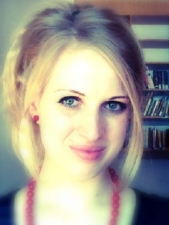

Mgr. Zuzana Štěrbová
Je postgraduální studentkou oboru Lékařská psychologie a psychopatologie na 1. Lékařské fakultě Univerzity Karlovy, školitel prof. Petr Weiss, konzultant Jaroslava Valentová PhD. Ve svém výzkumu se primárně zabývá vlivem sexuálního imprintingu na výběr partnera, načasováním senzitivní periody u lidí, nenáhodným párováním a vlivem primární rodiny na ženskou sexualitu. Jejím hlavním neodborným zájmem je pozorování a krmení ptactva.